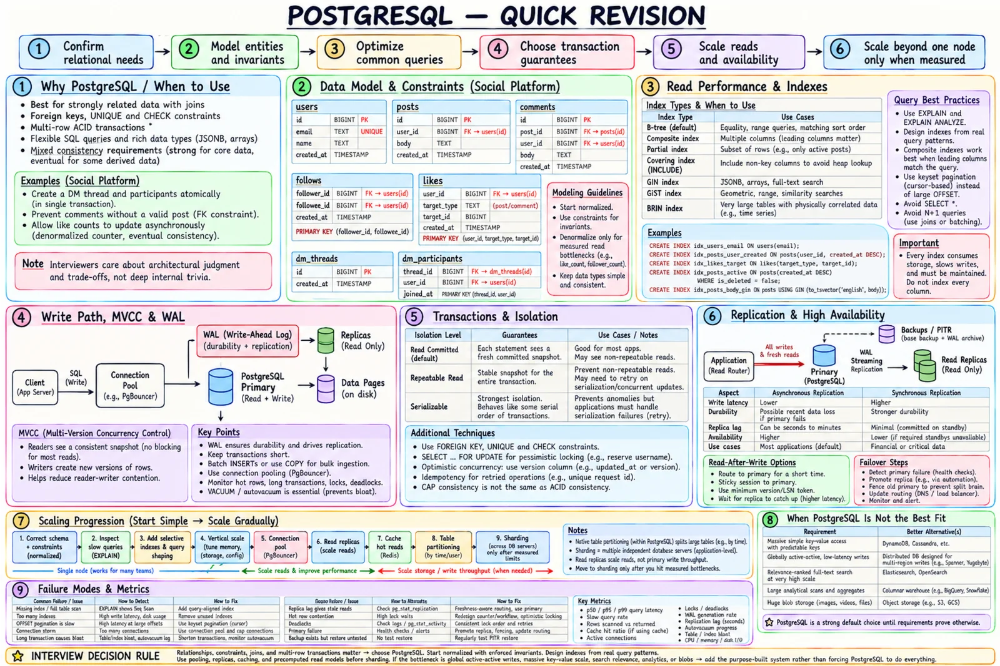

Topic · PostgreSQL
PostgreSQL: When and How to Use It
The default product database when relationships, constraints, and multi-row transactions matter. Ask whether its guarantees and query model fit the workload - not whether it has feature X.


Quick Revision
- Default when the domain has relationships, joins, integrity, uniqueness, and multi-row transactions.
- Invariants live in
PRIMARY KEY,FOREIGN KEY,UNIQUE,NOT NULL,CHECK. - Indexes from real queries; B-tree by default; composite order matches filters and sort.
- MVCC: readers rarely block writers;
VACUUMcleans dead tuples; long transactions cause bloat. READ COMMITTEDby default;SERIALIZABLEaborts - retry the whole transaction.- WAL = durability, recovery, replication. Replicas are async by default and are not backups.
- Scale: schema/queries → indexes → tuning + pooling → cache + replicas → partitioning → shard last.
What it's good at
- Strong relationships, joins, flexible SQL.
- Multi-row ACID transactions, referential integrity, uniqueness.
- Mixed read/write workloads.
- JSONB, arrays, full-text, geospatial - before adding another store.
- A dependable source of truth feeding caches, search, analytics, events.
Example - social platform: users, posts, comments, follows, likes, DMs. Creating a DM thread + participants + first message is atomic; a comment must reference a real post; like/follower counts can lag; profile and feed reads must be fast.
Clarifying questions
| Ask | Example answer | Decision |
|---|---|---|
| Relationships and joins central? | Yes | PostgreSQL as source of truth |
| What must be atomic? | DM creation, credit transfer | One transaction + constraints |
| Can counters lag? | Seconds | Async derived counters |
| Hottest reads? | Recent posts, profiles, counts | Composite indexes, selective denormalization, cache |
| Read-after-write? | For the author | Primary/LSN routing for author; replicas for others |
| Read:write ratio? | Read-heavy | Cache + replicas after tuning |
| Search? | Basic now, relevance later | GIN full-text first; search engine later |
| Large media? | Images, video | Object storage; metadata in PostgreSQL |
| Multi-region active-active writes? | No | One write region + DR replicas |
| RPO / RTO? | 5 min / 30 min | Base backups, WAL archive, tested PITR, HA |
| Append-heavy with retention? | 13 months of events | Range partition by time |
| One primary proven too small? | Not yet | Don't shard |
Estimation
storage rows × avg row + indexes + dead tuples + WAL + temp + replicas + backups
physical primary × (1 + replicas) + retained WAL + backups
reads backend = non-cacheable + cacheable × (1 - hit)
replica = backend - (fresh reads + fallback)
pool per app instance ≤ (limit - admin - replication - maintenance) ÷ max instances
lag WAL backlog = generation rate - apply rate (grows forever if apply < generation)
example 200M posts × 800 B = 160 GB → +40% ≈ 224 GB → × 3 copies ≈ 672 GB
20K QPS, 70% cacheable, 90% hit → misses 1.4K + non-cacheable 6K = 7.4K
1K fresh → ~6.4K across replicas
Backups aren't replicas and replicas aren't backups. Benchmark the real query mix, tail latency, and failover headroom.
Architecture
Clients → Gateway/LB → stateless services
├─ Object storage (media)
├─ Redis (hot profiles, counters, sessions)
└─ Read/write router + PgBouncer
├─ writes / fresh reads → Primary ──WAL──▶ Read replicas
└─ stale-tolerant reads → Replicas
Primary → outbox/CDC → Kafka → search / analytics / read models
Primary → base backups + WAL archive → PITR / DR
- Profile read - Redis → replica on miss (bounded staleness) →
(user_id, created_at DESC)→ media via CDN → fill cache. Just-updated user → primary or min LSN. - Create post - validate → BEGIN → insert post + outbox row → COMMIT → invalidate caches → worker publishes
PostCreated→ search/analytics/counters update. - Create DM - one transaction: thread, participants, first message.
- Failover - detect → pick current standby → fence old → promote → update router/pools → rebuild replicas → verify archive.
When it's not the best fit
| Need | Better direction |
|---|---|
| Massive simple key-value access | DynamoDB, Cassandra |
| Global active-active writes, strong semantics | Distributed SQL |
| Relevance search, analyzers | Elasticsearch/OpenSearch (PG stays truth) |
| Huge analytical scans | BigQuery, Snowflake, ClickHouse |
| Images, video, documents | Object storage + PG metadata |
| Billions of time-series points | Time-series system (or validated extension) |
Never say "NoSQL scales better" - name the access pattern, consistency need, and operational trade-off.
Interview practice
Answer aloud, then reveal.
The Card Company SDE 1 (Nov 2025): what is DB indexing and how does it work?
An auxiliary structure mapping values to row locations. B-tree speeds equality, range, order; costs space and write/WAL upkeep. Choose from predicate + order; verify with EXPLAIN (ANALYZE, BUFFERS).
Target L4 (Oct 2025): order service in PostgreSQL that publishes to Kafka - keep them consistent.
Order + outbox event in one transaction; worker publishes; consumers dedupe by event ID. No raw DB-write-then-publish.
Atlassian P40 (Oct 2024): DB for Confluence pages with tags, likes/dislikes, views, "most interacted".
Normalize pages, users, tags, page_tags, reactions; unique (user, page) reaction; append-only events or counters; "most interacted" from an aggregate view, not live scans.
Goldman Sachs Analyst (Sep 2024): optimize the DB; when use SQL/PostgreSQL?
Measure slow queries → fix shape + indexes → tune pools/working set → cache + replicas. PostgreSQL for joins, constraints, transactions; specialized stores for blobs, search, analytics, proven distributed writes.
Why PostgreSQL over DynamoDB or Cassandra?
Relational joins, constraints, multi-row transactions. KV stores win when access is simple, partition-keyed, and scale/availability dominate.
What do you monitor?
p50/p95/p99, slow queries, CPU/memory/I/O, cache hit, connections and pool waits, locks/deadlocks, transaction age, dead tuples/autovacuum/bloat, WAL/archive/lag/slots, replica cancellations, backup age, restore tests, failover time.